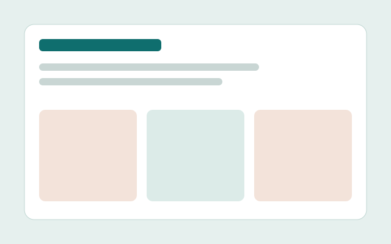

Diseño UX
Investigo usuarios, comparo referentes y valido con pruebas de usabilidad.
- Research
- Benchmark
- Wireframes
- Test de usabilidad
Disponible para pasantías
Diseñador UX/UI y desarrollador front-end
Diseño interfaces claras y accesibles, y las llevo a código limpio: de la investigación con usuarios al sitio publicado.
Investigo usuarios, comparo referentes y valido con pruebas de usabilidad.
Construyo sistemas de diseño coherentes con color, tipografía y componentes.
Maqueto sitios semánticos, responsive y accesibles, sin frameworks.
Versiono, publico y audito mis proyectos de punta a punta.

2026
Rediseño del flujo para contratar un seguro de celular en pocos pasos.
2026
Landing responsive con Flexbox, Grid y animaciones. Aprendí a pensar mobile-first.
2026
Relevamiento de requisitos y modelado UML de un sistema de soporte. Aprendí a traducir necesidades en casos de uso.
Licenciatura en Sistemas de Información, UADER
UADER, Facultad de Ciencia y Tecnología
Plataforma o institución
Soy estudiante de Sistemas de Información y me gusta que las cosas funcionen y se entiendan a la primera. Me interesa conectar el diseño de interfaces con el código que las hace reales.
Si no se entiende en segundos, se rediseña.
Diseño para que todas las personas puedan usarlo.
Pruebo, escucho y ajusto antes de dar algo por terminado.
Estoy buscando mi primera experiencia en UX/UI y front-end. Escribime y charlamos.